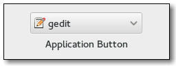

Gtk.AppChooserButton¶
Example¶

- Subclasses:
None
Methods¶
- Inherited:
Gtk.ComboBox (40), Gtk.Bin (1), Gtk.Container (35), Gtk.Widget (278), GObject.Object (37), Gtk.Buildable (10), Gtk.CellEditable (3), Gtk.CellLayout (9), Gtk.AppChooser (3)
- Structs:
Gtk.ContainerClass (5), Gtk.WidgetClass (12), GObject.ObjectClass (5)
class |
|
|
|
|
|
|
|
|
|
|
|
|
Virtual Methods¶
- Inherited:
Gtk.ComboBox (2), Gtk.Container (10), Gtk.Widget (82), GObject.Object (7), Gtk.Buildable (10), Gtk.CellEditable (3), Gtk.CellLayout (9)
|
Properties¶
- Inherited:
Gtk.ComboBox (16), Gtk.Container (3), Gtk.Widget (39), Gtk.CellEditable (1), Gtk.AppChooser (1)
Name |
Type |
Flags |
Short Description |
|---|---|---|---|
r/w/en |
The text to show at the top of the dialog |
||
r/w/c/en |
Whether the combobox should show the default application on top |
||
r/w/c/en |
Whether the combobox should include an item that triggers a |
Style Properties¶
- Inherited:
Signals¶
- Inherited:
Gtk.ComboBox (5), Gtk.Container (4), Gtk.Widget (69), GObject.Object (1), Gtk.CellEditable (2)
Name |
Short Description |
|---|---|
Emitted when a custom item, previously added with |
Fields¶
- Inherited:
Gtk.ComboBox (5), Gtk.Container (4), Gtk.Widget (69), GObject.Object (1), Gtk.CellEditable (2)
Name |
Type |
Access |
Description |
|---|---|---|---|
parent |
r |
Class Details¶
- class Gtk.AppChooserButton(**kwargs)¶
- Bases:
- Abstract:
No
- Structure:
The
Gtk.AppChooserButtonis a widget that lets the user select an application. It implements theGtk.AppChooserinterface.Initially, a
Gtk.AppChooserButtonselects the first application in its list, which will either be the most-recently used application or, ifGtk.AppChooserButton:show-default-itemisTrue, the default application.The list of applications shown in a
Gtk.AppChooserButtonincludes the recommended applications for the given content type. WhenGtk.AppChooserButton:show-default-itemis set, the default application is also included. To let the user chooser other applications, you can set theGtk.AppChooserButton:show-dialog-itemproperty, which allows to open a fullGtk.AppChooserDialog.It is possible to add custom items to the list, using
Gtk.AppChooserButton.append_custom_item(). These items cause theGtk.AppChooserButton::custom-item-activatedsignal to be emitted when they are selected.To track changes in the selected application, use the
Gtk.ComboBox::changedsignal.- classmethod new(content_type)[source]¶
- Parameters:
content_type (
str) – the content type to show applications for- Returns:
a newly created
Gtk.AppChooserButton- Return type:
Creates a new
Gtk.AppChooserButtonfor applications that can handle content of the given type.New in version 3.0.
- append_custom_item(name, label, icon)[source]¶
- Parameters:
Appends a custom item to the list of applications that is shown in the popup; the item name must be unique per-widget. Clients can use the provided name as a detail for the
Gtk.AppChooserButton::custom-item-activatedsignal, to add a callback for the activation of a particular custom item in the list. See alsoGtk.AppChooserButton.append_separator().New in version 3.0.
- append_separator()[source]¶
Appends a separator to the list of applications that is shown in the popup.
New in version 3.0.
- get_heading()[source]¶
- Returns:
the text to display at the top of the dialog, or
None, in which case a default text is displayed- Return type:
Returns the text to display at the top of the dialog.
- get_show_default_item()[source]¶
- Returns:
the value of
Gtk.AppChooserButton:show-default-item- Return type:
Returns the current value of the
Gtk.AppChooserButton:show-default-itemproperty.New in version 3.2.
- get_show_dialog_item()[source]¶
- Returns:
the value of
Gtk.AppChooserButton:show-dialog-item- Return type:
Returns the current value of the
Gtk.AppChooserButton:show-dialog-itemproperty.New in version 3.0.
- set_active_custom_item(name)[source]¶
- Parameters:
name (
str) – the name of the custom item
Selects a custom item previously added with
Gtk.AppChooserButton.append_custom_item().Use
Gtk.AppChooser.refresh() to bring the selection to its initial state.New in version 3.0.
- set_heading(heading)[source]¶
- Parameters:
heading (
str) – a string containing Pango markup
Sets the text to display at the top of the dialog. If the heading is not set, the dialog displays a default text.
- set_show_default_item(setting)[source]¶
- Parameters:
setting (
bool) – the new value forGtk.AppChooserButton:show-default-item
Sets whether the dropdown menu of this button should show the default application for the given content type at top.
New in version 3.2.
- set_show_dialog_item(setting)[source]¶
- Parameters:
setting (
bool) – the new value forGtk.AppChooserButton:show-dialog-item
Sets whether the dropdown menu of this button should show an entry to trigger a
Gtk.AppChooserDialog.New in version 3.0.
- do_custom_item_activated(item_name) virtual¶
- Parameters:
item_name (
str) –
Signal emitted when a custom item, previously added with
Gtk.AppChooserButton.append_custom_item(), is activated from the dropdown menu.
Signal Details¶
- Gtk.AppChooserButton.signals.custom_item_activated(app_chooser_button, item_name)¶
- Signal Name:
custom-item-activated- Flags:
- Parameters:
app_chooser_button (
Gtk.AppChooserButton) – The object which received the signalitem_name (
str) – the name of the activated item
Emitted when a custom item, previously added with
Gtk.AppChooserButton.append_custom_item(), is activated from the dropdown menu.
Property Details¶
- Gtk.AppChooserButton.props.heading¶
- Name:
heading- Type:
- Default Value:
- Flags:
The text to show at the top of the dialog that can be opened from the button. The string may contain Pango markup.
- Gtk.AppChooserButton.props.show_default_item¶
- Name:
show-default-item- Type:
- Default Value:
- Flags:
The
Gtk.AppChooserButton:show-default-itemproperty determines whether the dropdown menu should show the default application on top for the provided content type.New in version 3.2.
- Gtk.AppChooserButton.props.show_dialog_item¶
- Name:
show-dialog-item- Type:
- Default Value:
- Flags:
The
Gtk.AppChooserButton:show-dialog-itemproperty determines whether the dropdown menu should show an item that triggers aGtk.AppChooserDialogwhen clicked.